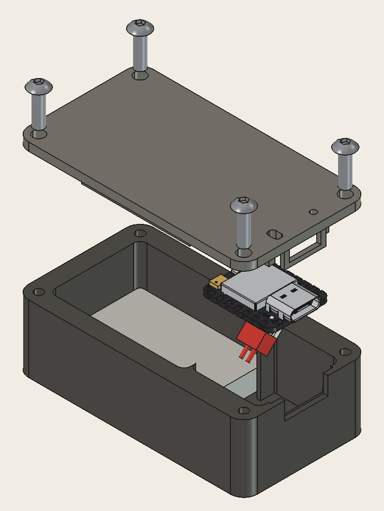

Wear the sensors
Two Seeed XIAO nRF52840 Sense boards sit on the upper arm and forearm.
BOOTH PROTOTYPE / ADELAIDE
FormGuard makes lifting form easier to see. Two small motion sensors track a curl and show what your elbow is doing, rep by rep.
THE IDEA
The prototype pairs on-body sensing with a clear browser view. No camera is needed to see the relationship between your upper arm and forearm.
Try the live sensor appTwo Seeed XIAO nRF52840 Sense boards sit on the upper arm and forearm.
Each 6-axis IMU estimates orientation and streams it to the browser over Bluetooth LE.
The app turns sensor orientation into elbow motion and flags movement that needs attention.
BOOTH RECORDINGS / 21 OCT 2026
Watch the booth clip beside the live FormGuard arm display. Its angle and motion readings follow the recorded IMU stream.
DESIGNED FOR THE ARM
The custom printed enclosure holds the sensor board and a 400 mAh battery. Its lid clips into place, and USB-C stays accessible for charging and flashing.
Case dimensions and build notes